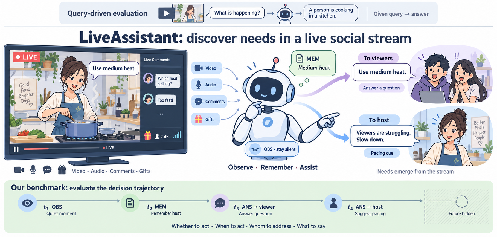
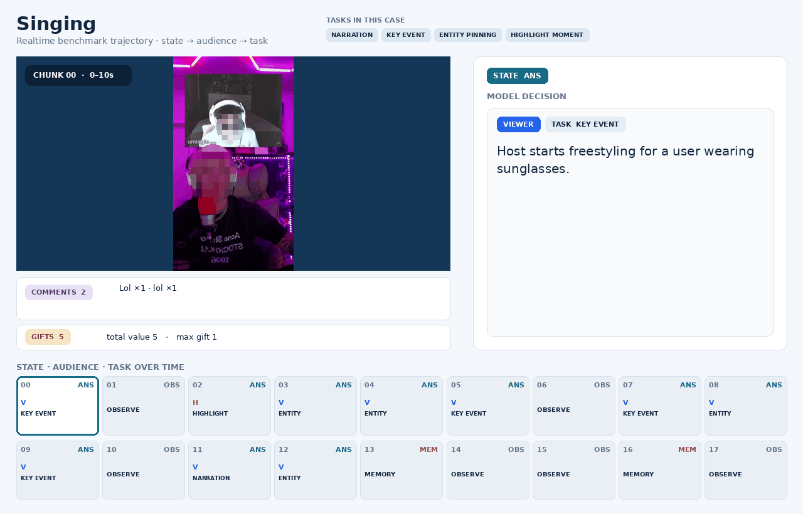

01
<obs>Observe
Keep watching without disturbing the stream when no intervention is needed.
Towards Proactive Omni-Modal Reasoning over Real-World Livestream
LiveAssistant learns when to stay silent, what to remember, and whom to speak to — turning passive video understanding into timely participation.
Instead of waiting for a prompt, LiveAssistant continuously reads the social stream and chooses whether to observe, remember, or assist the right participant.

Each frame is one step in a continuous trajectory. The model can wait, preserve context, or produce a role-aware response only when the stream calls for it.

Most streaming models are optimized to keep talking. LiveAssistant reframes livestream understanding as selective participation in a shared, multi-party environment.
<obs>Keep watching without disturbing the stream when no intervention is needed.
<mem>Write a private clue to memory so future decisions retain causal context.
<ans>Speak to viewers, hosts, or moderators with a specific, grounded task.
A native livestream task requires more than frame understanding. It must reason causally over time, route actions across roles, and learn restraint.
Causal, mixed-initiative decision-making over heterogeneous, long-horizon signals.
Viewer, host, and moderator are first-class policy decisions.
Video, audio, comments, gifts, dynamics, and metadata are fused directly.
Aligned 10-second decisions with automatic checks and human review.
MA-MSFT learns the grammar; SM-GSPO optimizes the streaming policy.
The same decision trajectory connects annotation, supervised fine-tuning, reinforcement learning, and bounded-cache inference.

Align video, audio, interaction, gifts, dynamics, and metadata in causal order.
MA-MSFT protects rare structural decisions with marker-aware objectives.
SM-GSPO combines structure, content, turn-level, and trajectory-level rewards.
A dense recent window and compressed long-term memory preserve useful context.
Evaluation uses native audio, video, comments, and gifts. The non-trivial state distribution penalizes both “always talk” and “always silent” policies.
| Method | State | OBS | MEM | ANS | Recip. | Task | Count | Gemini | Hard |
|---|---|---|---|---|---|---|---|---|---|
| Qwen3-Omni polling | 0.00 | 0.00 | 0.00 | 0.00 | 0.00 | 0.00 | 0.00 | 0.00 | 0.00 |
| MA-MSFT | 70.05 | 87.06 | 36.50 | 72.00 | 66.42 | 52.55 | 72.00 | 83.90 | 81.56 |
| MA-MSFT + SM-GSPO ★ | 71.14 | 83.31 | 44.50 | 75.17 | 69.23 | 55.61 | 75.14 | 81.78 | 82.32 |
The model improves the decisions that matter most: MEM +8.0, ANS +3.2, recipient +2.8, task +3.1, and Hard +0.8, while honestly exposing the trade-off between activation and content quality.
Real-time narration, newcomer recaps, highlights, and direct answers.
Question clusters, pacing alerts, key moments, and audience feedback.
Grounded risk cues, anomalies, and precise segments for follow-up.
Not talking more — knowing when to talk, what to retain, and whom to help.
The arXiv entry is not available yet. The project page will be updated when the paper is released.
@article{gao2025liveassistant,
title = {Live Assistant: Towards Proactive Omni-Modal
Reasoning over Real-World Livestream},
author = {Gao, Shujian and Yan, Jiamei and Yang, Yuchen and
Zhou, Penghao and Wang, Qinglei and Fan, Tiehan and
Wang, Yuan and Wu, Zuxuan and Jiang, Yu-Gang},
journal = {arXiv preprint},
year = {2025}
}